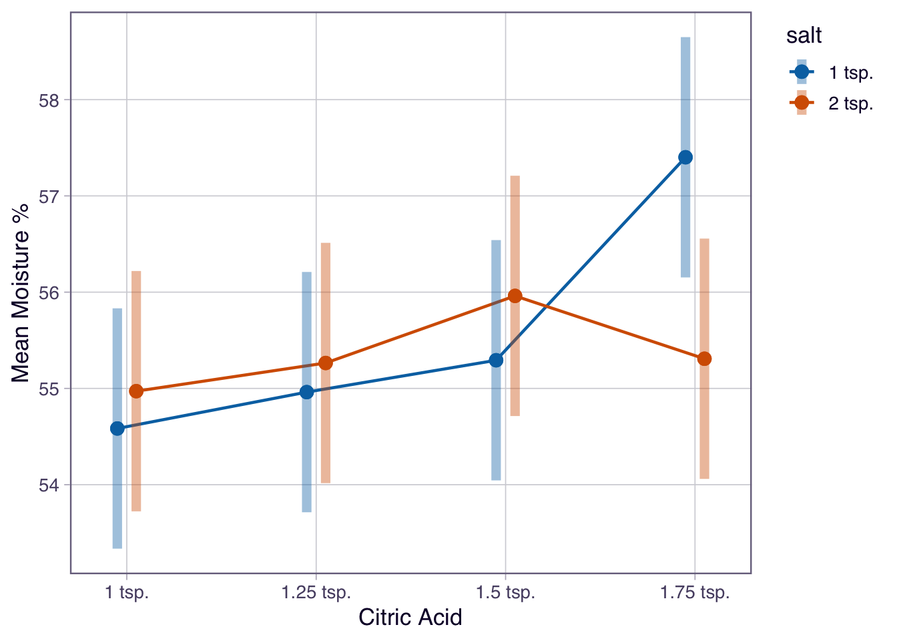

| milk | cheese_block | citric_acid | salt | location | moisture_perc |
|---|---|---|---|---|---|
| Organic Local | cheese_block01 | 1.5 tsp. | 2 tsp. | location01 | 60.09875 |
| Organic Local | cheese_block01 | 1.5 tsp. | 2 tsp. | location02 | 57.79328 |
| Organic Local | cheese_block01 | 1.5 tsp. | 2 tsp. | location03 | 58.82279 |
| Organic Local | cheese_block02 | 1.25 tsp. | 2 tsp. | location01 | 59.00913 |
| Organic Local | cheese_block02 | 1.25 tsp. | 2 tsp. | location02 | 60.91573 |
| Organic Local | cheese_block02 | 1.25 tsp. | 2 tsp. | location03 | 61.35199 |
Activity 5.2: Analyzing Blocked Designs
Cheese
Warning
Submit via Gradescope, don’t forget to assign pages to the questions in the outline!
Delete any extraneous instructions (like this box) before submission (unless you are using the PDF template). You will be deducted points from now on if you do not follow this instruction!
There is no coding required for this activity! I would recommend you complete it using the Word or PDF versions, but you are still welcome to use the .qmd template: 05.2-activity-factorial-blocking.qm.
- If you use the .qmd template, you will need to refer to the online instructions to see the referenced output
Scenario
An experiment is to be conducted to evaluate the effect of citric acid and salt on the moisture content (in %) of mozzarella cheese. Typically, mozzarella cheese has a moisture content between 52 and 60%, but “low-moisture mozzarella” may have moisture content between 45-52%.1. Mozzarella cheese can be made by mixing 1 gallon of milk, 1/4 tsp of liquid rennet, cheese salt, and citric acid.
Blocks of mozzarella cheese will be made by using 4 different amounts of citric acid (1 tsp, 1.25 tsp, 1.5 tsp, 1.75 tsp) and 2 different amounts of cheese salt (1 tsp and 2 tsp). After storage in a cooler for 3 months, the moisture content of each block will be measured at three different random locations within the block of cheese.
The researchers would like to include different types of milk as a blocking factor in their study. They went to the store and bought six different types of whole milk (e.g. from different brands, organic or not, etc.) and will run a randomized complete block design making 8 blocks of cheese from each type of milk (one block from each combination of levels of citric acid and salt). The order of mixing/making each block of cheese will be randomized within each milk type.
Part A: Setup
1. Sketch a design blueprint
- Clearly indicate the experimental units and measurement units
- Clearly indicate the blocking factor (show grouping)
- Show how treatments are assigned within blocks
2. Describe the treatment and experimental structures (bullets is fine!)
3. In one sentence, explain why blocking is preferable to using milk type as an inclusion criterion.
4. For the RCBD analysis that we have learned so far, how should the researchers use the three measurements from each cheese block?
5. Which of the following shows the first couple of rows of the appropriate data to use to analyze this study based on what we know so far? Fill in the blanks in the statement below to describe the data.
The appropriate data to use to analyze the cheese study is Data _______. The full dataset would have ____________ rows, where each row represents one ___________________.
NoteData A
NoteData B
| milk | cheese_block | citric_acid | salt | mean_moisture_perc |
|---|---|---|---|---|
| Organic Local | cheese_block01 | 1.5 tsp. | 2 tsp. | 58.90494 |
| Organic Local | cheese_block02 | 1.25 tsp. | 2 tsp. | 60.42562 |
| Organic Local | cheese_block03 | 1.25 tsp. | 1 tsp. | 56.82857 |
| Organic Local | cheese_block04 | 1.5 tsp. | 1 tsp. | 60.03801 |
| Organic Local | cheese_block05 | 1.75 tsp. | 1 tsp. | 61.50799 |
| Organic Local | cheese_block06 | 1 tsp. | 1 tsp. | 58.82087 |
Part B: Statistical Model
Important
For the rest of the activity, assume we have used the appropriate data for the analysis!!
6. State the statistical effects model for a two-factorial RCBD from Module 5.
Make sure to define all terms, denote \(i,j,m\) values, and include assumptions.
7. Fill in the skeleton ANOVA table for the analysis of this experiment using the RCBD analyses we have learned so far. (delete rows you don’t need)
| Source of Variation | DF |
|---|---|
Part C: R Analysis
7. Fill in the appropriate R formula to fit the model assuming that you are using the data (called cheese_dat) from Q5:
cheese_mod <- lm(______________________________________________________________,
data = cheese_dat)
NoteOutput for Q8-10
levels(cheese_data$milk)[1] "Organic Local" "Organic Lucern" "Regular Local"
[4] "Regular Lucern" "Unpasterized Local" "Unpasterized Lucern"levels(cheese_data$citric_acid)[1] "1 tsp." "1.25 tsp." "1.5 tsp." "1.75 tsp."levels(cheese_data$salt)[1] "1 tsp." "2 tsp."summary(cheese_mod)
Call:
lm(formula = mean_moisture_perc ~ citric_acid + salt + citric_acid:salt +
milk, data = cheese_data)
Residuals:
Min 1Q Median 3Q Max
-2.16702 -0.58044 -0.01143 0.57925 1.92004
Coefficients:
Estimate Std. Error t value Pr(>|t|)
(Intercept) 55.46802 0.15214 364.596 < 2e-16 ***
citric_acid1 -0.69051 0.26351 -2.620 0.0129 *
citric_acid2 -0.35520 0.26351 -1.348 0.1863
citric_acid3 0.15893 0.26351 0.603 0.5503
salt1 0.09177 0.15214 0.603 0.5503
milk1 4.03406 0.34019 11.858 8.19e-14 ***
milk2 -0.91555 0.34019 -2.691 0.0108 *
milk3 1.51973 0.34019 4.467 7.92e-05 ***
milk4 -3.22650 0.34019 -9.485 3.32e-11 ***
milk5 1.54733 0.34019 4.548 6.22e-05 ***
citric_acid1:salt1 -0.28561 0.26351 -1.084 0.2858
citric_acid2:salt1 -0.24307 0.26351 -0.922 0.3626
citric_acid3:salt1 -0.42608 0.26351 -1.617 0.1149
---
Signif. codes: 0 '***' 0.001 '**' 0.01 '*' 0.05 '.' 0.1 ' ' 1
Residual standard error: 1.054 on 35 degrees of freedom
Multiple R-squared: 0.9025, Adjusted R-squared: 0.8691
F-statistic: 27.01 on 12 and 35 DF, p-value: 3.714e-14anova(cheese_mod)Analysis of Variance Table
Response: mean_moisture_perc
Df Sum Sq Mean Sq F value Pr(>F)
citric_acid 3 16.98 5.658 5.0932 0.004967 **
salt 1 0.40 0.404 0.3639 0.550250
milk 5 327.86 65.571 59.0216 4.588e-16 ***
citric_acid:salt 3 14.81 4.935 4.4421 0.009538 **
Residuals 35 38.88 1.111
---
Signif. codes: 0 '***' 0.001 '**' 0.01 '*' 0.05 '.' 0.1 ' ' 18. Based on the output provided, was blocking helpful in this study? How do you know?
9. Based on the output provided, what is the estimated mean moisture content for a cheese made from the following. Show all work!
- local organic milk
- 1 tsp citric acid and
- 2 tsp cheese salt
10. Based on the output provided, what effects should we consider for further the analysis? (e.g. interaction effects of …. main effects of ….)
11. Describe the nature of the interaction, if any, based on the plot below.
NoteOutput for Q11
emmip(cheese_mod, salt ~ citric_acid, CIs = TRUE, adjust = "tukey") +
labs(y = "Mean Moisture %",
x = "Citric Acid")
Part D: Conclusions and Follow-Up
NoteOutput for Q12
emmeans(cheese_mod, specs = ~ citric_acid*salt) |>
joint_tests(by = "salt")salt = 1 tsp.:
model term df1 df2 F.ratio p.value
citric_acid 3 35 8.593 0.0002
salt = 2 tsp.:
model term df1 df2 F.ratio p.value
citric_acid 3 35 0.942 0.4307emmeans(cheese_mod, specs = ~ citric_acid | salt) |>
cld(Letters = LETTERS, decreasing = T, adjust = "tukey")salt = 1 tsp.:
citric_acid emmean SE df lower.CL upper.CL .group
1.75 tsp. 57.4 0.43 35 56.3 58.5 A
1.5 tsp. 55.3 0.43 35 54.2 56.4 B
1.25 tsp. 55.0 0.43 35 53.8 56.1 B
1 tsp. 54.6 0.43 35 53.5 55.7 B
salt = 2 tsp.:
citric_acid emmean SE df lower.CL upper.CL .group
1.5 tsp. 56.0 0.43 35 54.8 57.1 A
1.75 tsp. 55.3 0.43 35 54.2 56.4 A
1.25 tsp. 55.3 0.43 35 54.1 56.4 A
1 tsp. 55.0 0.43 35 53.8 56.1 A
Results are averaged over the levels of: milk
Confidence level used: 0.95
Conf-level adjustment: sidak method for 4 estimates
P value adjustment: tukey method for comparing a family of 4 estimates
significance level used: alpha = 0.05
NOTE: If two or more means share the same grouping symbol,
then we cannot show them to be different.
But we also did not show them to be the same. 12 Based on the analyses shown, do you have a recommendation in terms of salt and citric acid for cheese makers trying to make a mozzarella cheese with the highest moisture content?
13. To what population can we generalize results from this study?
14. Suppose the researchers were also interested in whether the effect of citric acid on the moisture depends on milk type. Why would this be difficult or impossible to assess using the current design?
Footnotes
Reference: https://www.sciencedirect.com/topics/agricultural-and-biological-sciences/mozzarella-cheese↩︎